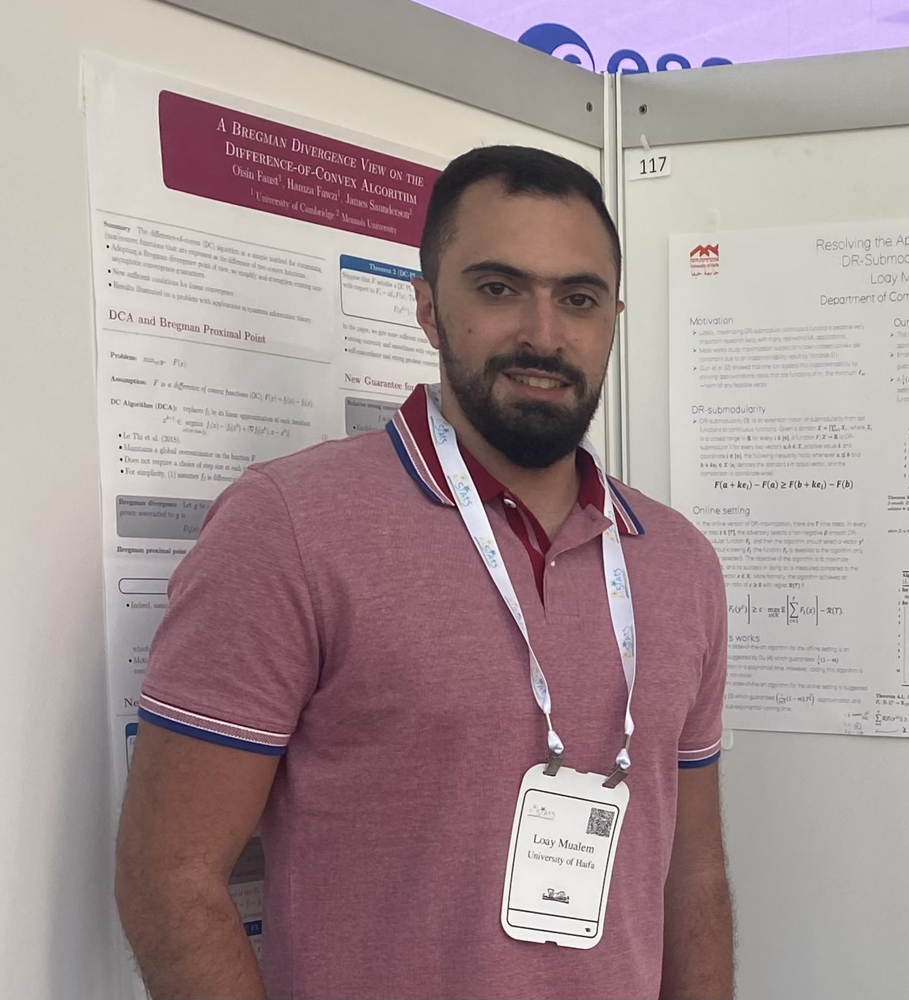
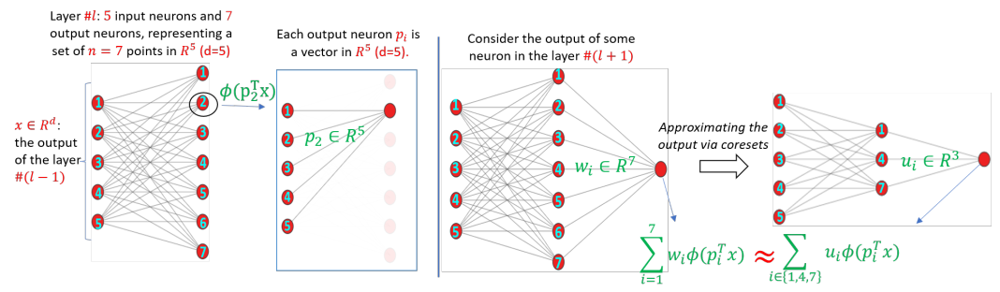

| 
CV |
Google Scholar |
LinkedIn| |
I am a last-year Computer Science Ph.D. candidate under the supervision of Prof. Moran Feldman, at the Computer Science Department, University of Haifa, and under the supervision of Prof. Dan Feldman, at the Robotics & Big Data Labs, Computer Science Department, University of Haifa. My main research interests are Optimization, Machine/Deep Learning, and Big Data. I am passionate about employing provable optimization techniques to enhance the quality and accelerate the training of real-world Machine/Deep Learning models. |
{kind=link}
|
DataHeroes |

Haifa University |
|---|
|
paper |
abstract |
bibtex |
Optimization of DR-submodular functions has experienced a notable surge in significance in recent times, marking a pivotal development within the domain of non-convex optimization. Motivated by real-world scenarios, some recent works have delved into the maximization of non-monotone DR-submodular functions over general (not necessarily down-closed) convex set constraints. Up to this point, these works have all used the minimum L-infinity norm of any feasible solution as a parameter. Unfortunately, a recent hardness result due to Mualem and Feldman shows that this approach cannot yield a smooth interpolation between down-closed and non-down-closed constraints. In this work, we suggest novel offline and online algorithms that provably provide such an interpolation based on a natural decomposition of the convex body constraint into two distinct convex bodies: a down-closed convex body and a general convex body. We also empirically demonstrate the superiority of our proposed algorithms across three offline and two online applications.
@article{mualem2024bridging,
title={Bridging the Gap Between General and Down-Closed Convex Sets in Submodular Maximization},
author={Mualem, Loay and Tukan, Murad and Fledman, Moran},
journal={arXiv preprint arXiv:2401.09251},
year={2024}
}
|
||
|
paper |
abstract |
bibtex |
DNA methylation data plays a crucial role in estimating chronological age in mammals, offering real-time insights into an individual's aging process. The Epigenetic Pacemaker (EPM) model allows inference of the biological age as deviations from the population trend. Given the sensitivity of this data, it is essential to safeguard both inputs and outputs of the EPM model. In a recent study by Goldenberg et al., a privacy-preserving approach for EPM computation was introduced, utilizing Fully Homomorphic Encryption (FHE). However, their method had limitations, including having high communication complexity and being impractical for large datasets. Our work presents a new privacy preserving protocol for EPM computation, analytically improving both privacy and complexity. Notably, we employ a single server for the secure computation phase while ensuring privacy even in the event of server corruption (compared to requiring two non-colluding servers in Goldenberg et al). Using techniques from symbolic algebra and number theory, the new protocol eliminates the need for communication during secure computation, significantly improves asymptotic runtime and offers better compatibility to parallel computing for further time complexity reduction. We have implemented our protocol, demonstrating its ability to produce results similar to the standard (insecure) EPM model with substantial performance improvement compared to Goldenberg et al. These findings hold promise for enhancing data security in medical applications where personal privacy is paramount. The generality of both the new approach and the EPM, suggests that this protocol may be useful to other uses employing similar expectation maximization techniques.
@inproceedings{goldenberg2024privacy,
title={Privacy Preserving Epigenetic PaceMaker: Stronger Privacy and Improved Efficiency},
author={Goldenberg, Meir and Mualem, Loay and Shahar, Amit and Snir, Sagi and Akavia, Adi},
booktitle={International Conference on Research in Computational Molecular Biology},
pages={412--416},
year={2024},
organization={Springer}
}
|
||
|
paper |
abstract |
bibtex
Despite the rich existing literature about minimax optimization in continuous settings, only very partial results of this kind have been obtained for combinatorial settings. In this paper, we fill this gap by providing a characterization of submodular minimax optimization, the problem of finding a set (for either the min or the max player) that is effective against every possible response. We show when and under what conditions we can find such sets. We also demonstrate how minimax submodular optimization provides robust solutions for downstream machine learning applications such as (i) prompt engineering in large language models, (ii) identifying robust waiting locations for ride-sharing, (iii) kernelization of the difficulty of instances of the last setting, and (iv) finding adversarial images. Our experiments show that our proposed algorithms consistently outperform other baselines.
@inproceedings{mualem2024submodular,
title={Submodular minimax optimization: Finding effective sets},
author={Mualem, Loay Raed and Elenberg, Ethan R and Feldman, Moran and Karbasi, Amin},
booktitle={International Conference on Artificial Intelligence and Statistics},
pages={1081--1089},
year={2024},
organization={PMLR}
}
|
||

|
paper |
abstract |
bibtex |
In recent years, maximization of DR-submodular continuous functions became an important research field, with many real-world applications in the domains of machine learning, communication systems, operation research, and economics. Most of the works in this field study maximization subject to down-closed convex set constraints due to an inapproximability result. However, Durr et al. showed that one can bypass this inapproximability by proving approximation ratios that are functions of $m$, the minimum $\ell_\infty$-norm of any feasible vector. Given this observation, it is possible to get results for maximizing a DR-submodular function subject to general convex set constraints, which has led to multiple works on this problem. The most recent of which is a polynomial time $\tfrac{1}{4}(1 - m)$-approximation offline algorithm due to Du. However, only a sub-exponential time $\tfrac{1}{3\sqrt{3}}(1 - m)$-approximation algorithm is known for the corresponding online problem. In this work, we present a polynomial time online algorithm matching the $\tfrac{1}{4}(1 - m)$-approximation of the state-of-the-art offline algorithm. We also present an inapproximability result showing that our online algorithm and Du's offline algorithm are both optimal in a strong sense. Finally, we study the empirical performance of our algorithm and the algorithm of Du (which was only theoretically studied previously), and show that they consistently outperform previously suggested algorithms on revenue maximization, location summarization, and quadratic programming applications.
@inproceedings{mualem2023resolving,
title={Resolving the approximability of offline and online non-monotone dr-submodular maximization over general convex sets},
author={Mualem, Loay and Feldman, Moran},
booktitle={International Conference on Artificial Intelligence and Statistics},
pages={2542--2564},
year={2023},
organization={PMLR}
}
|
|

|
paper |
abstract |
bibtex |
Over the last two decades, submodular function maximization has been the workhorse of many discrete optimization problems in machine learning applications. Traditionally, the study of submodular functions was based on binary function properties, but recent works began to consider continuous function properties such as the submodularity ratio and the curvature. The monotonicity property of set functions plays a central role in submodular maximization. Nevertheless, no continuous version of this property has been suggested to date (as far as we know), which is unfortunate since submodular functions that are almost monotone often arise in machine learning applications. In this work, we fill this gap by defining the monotonicity ratio, which is a continuous version of the monotonicity property. We then show that for many standard submodular maximization algorithms one can prove new approximation guarantees that depend on the monotonicity ratio; leading to improved approximation ratios for the common machine learning applications of movie recommendation, quadratic programming, image summarization, and ride-share optimization.
@article{mualem2022using,
title={Using partial monotonicity in submodular maximization},
author={Mualem, Loay and Feldman, Moran},
journal={Advances in Neural Information Processing Systems},
volume={35},
pages={2723--2736},
year={2022}
}
|
|
|  |
paper |
abstract |
bibtex
Pruning is one of the predominant approaches for compressing deep neural networks (DNNs). Lately, coresets (provable data summarizations) were leveraged for pruning DNNs, adding the advantage of theoretical guarantees on the trade-off between the compression rate and the approximation error. However, coresets in this domain were either data dependant or generated under restrictive assumptions on both the model's weights and inputs. In real-world scenarios, such assumptions are rarely satisfied, limiting the applicability of coresets. To this end, we suggest a novel and robust framework for computing such coresets under mild assumptions on the model's weights and without any assumption on the training data. The idea is to compute the importance of each neuron in each layer with respect to the output of the following layer. This is achieved by an elegant combination of L\"{o}wner ellipsoid and Caratheodory theorem.Our method is simultaneously data-independent, applicable to various networks and datasets (due to the simplified assumptions), and theoretically supported. Experimental results show that our method outperforms existing coreset based neural pruning approaches across a wide range of networks and datasets. For example, our method achieved a 62% compression rate on ResNet50 on ImageNet with 1.09% drop in accuracy.
@article{tukan2022pruning,
title={Pruning neural networks via coresets and
convex geometry: Towards no assumptions},
author={Tukan, Murad and Mualem, Loay and Maalouf, Alaa},
journal={Advances in Neural Information Processing Systems},
volume={35},
pages={38003--38019},
year={2022}
}
|
|

|
paper |
abstract |
bibtex |
In the d-dimensional online bin packing problem, d-dimensional cubes of positive sizes no larger than 1 are presented one by one to be assigned to positions in d-dimensional unit cube bins. In this work, we provide improved upper bounds on the asymptotic competitive ratio for square and cube bin packing problems, where our bounds do not exceed 2.0885 and 2.5735 for square and cube packing, respectively. To achieve these results, we adapt and improve a previously designed harmonic-type algorithm, and apply a different method for defining weight functions. We detect deficiencies in the state-of-the-art results by providing counter-examples to the current best algorithms and their analysis, where the claimed bounds were 2.1187 for square packing and 2.6161 for cube packing.
@article{epstein2023online,
title={Online bin packing of squares and cubes},
author={Epstein, Leah and Mualem, Loay},
journal={Algorithmica},
volume={85},
number={5},
pages={1415--1458},
year={2023},
publisher={Springer}
}
|